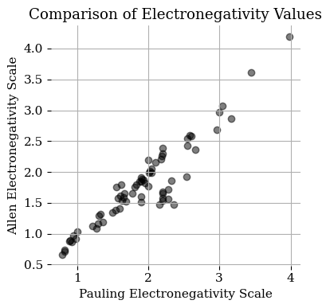
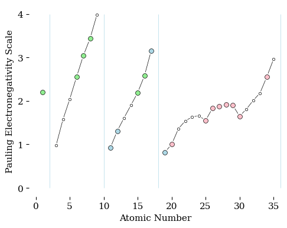

Plot of Electronegativity#
We can visualize the nature of covalent, plar covalent and ionic bonds. Electrobegativity can be scored many ways. the data set that I used has values dveloped by Pauling and by Allen. They are based on different ways of measuring electron affinity.
Paulings values are deribed from differences in bond strengths between homodiatomic dissociation energies and the dissociation energy of the bond between the elements in question. e.g. Comparing the dissociation energies for H2, Br2, and HBr. As a result some elements that do not form bonds with other elements, like helium and neon, do noy have values in this system.
Allens values are absed on the energy required to eject an electron from the outer valence shell of the element. It correlates strongly to Pauling’s values. The noble gasses have the highest electronegativity in this system because they have a perfect outer shell that resists disruption.
Where Did That Data Come From#
The data was from tables collected in the Electronegativity Data page on Wikipedia. References for the original sources can be found there.
I copies the data and editted them into a csv text file as Electroneg-wikipedia.csv.
The Plot#
| number | symbol | name | pauling | allen | |
|---|---|---|---|---|---|
| 0 | 1 | H | hydrogen | 2.20 | 2.300 |
| 1 | 2 | He | helium | NaN | 4.160 |
| 2 | 3 | Li | lithium | 0.98 | 0.912 |
A Visual Check#
A quick and easy way to see how two data sets compare is to graph one against the other. Here we will plot the two sets of abundance values. If they are both the same for each element we shpuld get a stricght line.

Click here to See Interactive Plot (just in case it doesn’t appear on this page).
This plot has the crisp and uncluttered style that I prefer. It’s interactive too. Mouseover to query each point.
The Plot for the Textbook#
The code below will produce the plot that is used in the textbook
the Final Plot#
I am more experienced with MatPlotLib than Plotly and will make my final plot using that library.

<Figure size 500x400 with 0 Axes>
This image was exported as a PDF and edited using Affinity Publisher to add element labels.